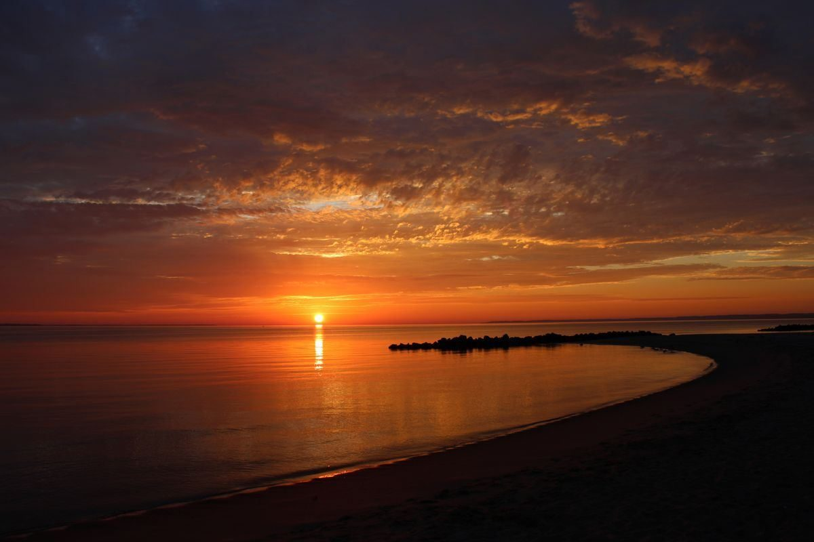
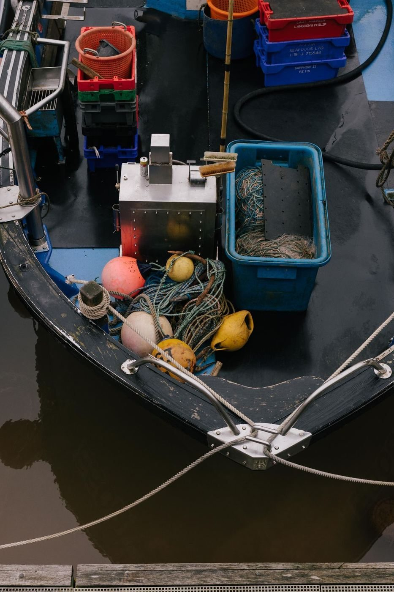

Out Cast Charters runs Galveston fishing charters since 2016, a family-friendly operation with a Captain Sharky crew. Trips depart from Bayside Event Center, per the charter's own site. Every trip is all-inclusive: rods, reels, fuel, bait, tackle, ice, water, and complimentary fish filleting. Guests bring a fishing license, snacks, and drinks. Call to book.

